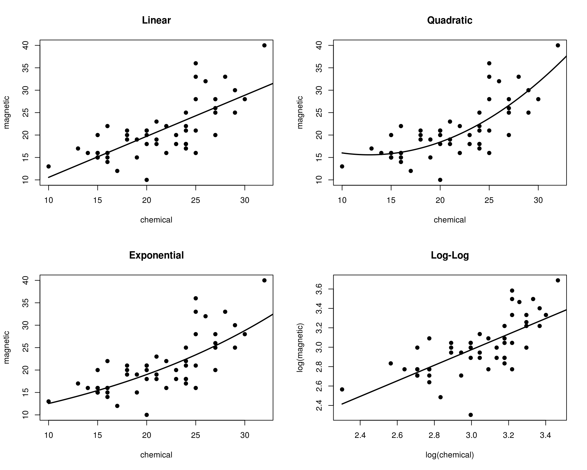
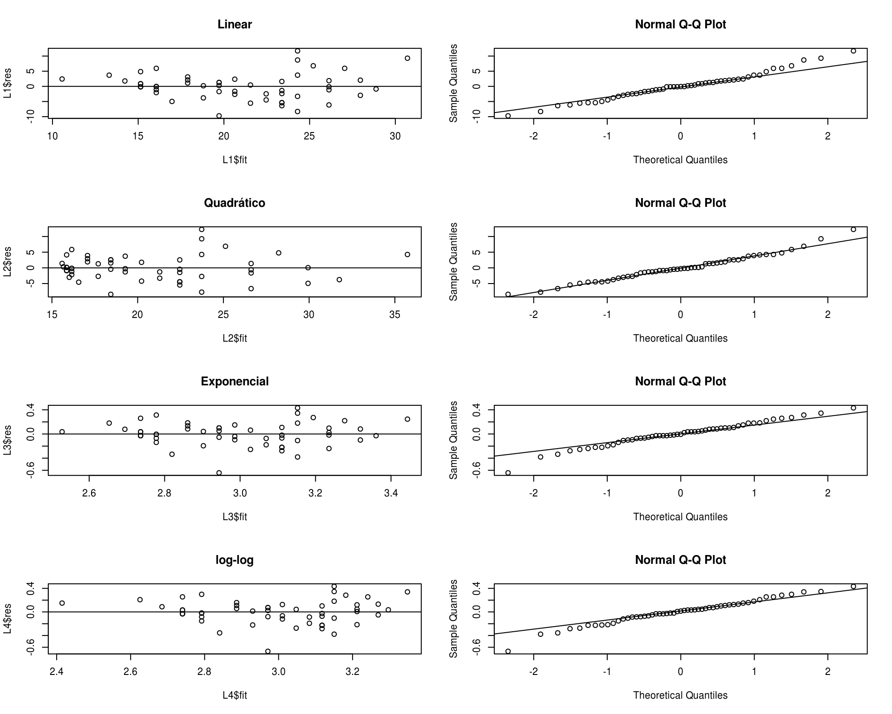

Métodos de reamostragem
Jackknife
Fernando P. Mayer
1 Introdução
2 Jackknife
## Example 8.6 (Jackknife estimate of bias)
data(patch, package = "bootstrap")
n <- nrow(patch)
y <- patch$y
z <- patch$z
(theta.hat <- mean(y)/mean(z))
# [1] -0.0713061
## compute the jackknife replicates, leave-one-out estimates
theta.jack <- numeric(n)
for (i in 1:n) {
theta.jack[i] <- mean(y[-i])/mean(z[-i])
}
(bias <- (n - 1) * (mean(theta.jack) - theta.hat))
# [1] 0.008002488
## Example 8.7 (Jackknife estimate of standard error)
(se <- sqrt((n-1) * mean((theta.jack - mean(theta.jack))^2)))
# [1] 0.1055278
## Example 8.8 (Failure of jackknife)
set.seed(123) #for the specific example given
n <- 10
x <- sample(1:100, size = n)
## jackknife estimate of se
M <- numeric(n)
for (i in 1:n) { #leave one out
y <- x[-i]
M[i] <- median(y)
}
Mbar <- mean(M)
sqrt((n - 1)/n * sum((M - Mbar)^2))
# [1] 10.5
## bootstrap estimate of se
Mb <- replicate(1000, expr = {
y <- sample(x, size = n, replace = TRUE)
median(y)
})
sd(Mb)
# [1] 8.864812
x
# [1] 31 79 51 14 67 42 50 43 97 25
M
# [1] 50 43 43 50 43 50 43 50 43 50
Mb
# [1] 51.0 50.0 67.0 55.0 42.0 50.5 50.5 42.5 46.5 42.5 50.5 36.5 36.5
# [14] 46.5 46.5 42.5 46.0 46.5 31.0 46.5 58.5 58.5 46.5 46.5 51.0 50.0
# [27] 51.0 36.5 43.0 46.0 59.0 37.0 67.0 42.5 42.5 46.5 46.5 46.0 50.5
# [40] 42.0 40.5 46.5 42.5 46.5 43.0 46.5 36.5 43.0 50.5 46.5 50.0 47.0
# [53] 28.0 50.5 55.0 43.0 46.5 46.5 43.0 36.5 50.5 58.5 42.5 46.5 43.0
# [66] 31.0 50.0 59.0 50.5 50.5 46.5 50.0 42.5 43.0 43.0 59.0 46.0 50.0
# [79] 42.0 59.0 59.0 50.0 50.0 50.5 46.5 51.0 50.5 51.0 46.5 55.0 46.5
# [92] 50.5 42.5 43.0 51.0 43.0 50.5 36.5 51.0 50.5 47.0 42.0 50.5 50.0
# [105] 50.5 43.0 51.0 37.0 65.0 50.5 42.5 59.0 43.0 42.0 55.0 19.5 41.0
# [118] 31.0 59.0 36.5 50.5 46.5 36.5 43.0 42.5 42.5 55.0 46.0 42.0 40.5
# [131] 59.0 42.5 40.5 50.0 50.5 51.0 46.5 50.0 42.0 50.5 43.0 46.5 42.0
# [144] 50.5 46.5 50.0 82.0 50.5 43.0 50.5 46.0 46.5 59.0 50.5 50.5 43.0
# [157] 73.0 59.0 67.0 42.0 47.0 50.0 46.0 50.0 59.0 46.5 46.5 36.5 46.5
# [170] 50.5 37.0 50.5 42.0 47.0 46.5 51.0 43.0 67.0 50.5 55.0 31.0 50.0
# [183] 43.0 47.0 50.5 67.0 50.5 50.0 37.0 50.5 40.5 46.0 46.0 50.0 46.5
# [196] 46.0 58.5 42.0 25.0 46.5 50.0 42.5 51.0 50.5 36.5 42.5 46.5 46.5
# [209] 43.0 50.5 42.5 50.0 46.5 31.0 31.0 50.0 46.0 46.5 43.0 42.5 46.5
# [222] 42.0 42.5 51.0 42.5 46.5 43.0 42.5 47.0 43.0 34.0 46.5 25.0 67.0
# [235] 51.0 36.5 46.5 46.5 41.0 55.0 67.0 40.5 51.0 37.0 46.0 50.5 47.0
# [248] 67.0 73.0 59.0 46.0 47.0 37.0 51.0 31.0 50.0 59.0 46.5 31.0 46.5
# [261] 25.0 46.0 51.0 46.0 46.5 50.0 79.0 25.0 43.0 43.0 51.0 42.5 47.0
# [274] 46.0 42.0 43.0 42.5 42.0 36.5 42.5 31.0 79.0 42.5 59.0 46.5 50.0
# [287] 50.5 31.0 28.0 50.5 50.0 59.0 28.0 51.0 42.5 42.5 37.0 73.0 50.0
# [300] 42.5 46.0 40.5 43.0 37.0 50.0 46.5 31.0 43.0 46.0 36.5 46.5 46.5
# [313] 59.0 50.0 36.5 65.0 50.0 50.0 42.0 34.0 64.5 61.0 79.0 36.5 42.0
# [326] 42.5 28.0 31.0 46.0 50.5 43.0 59.0 50.0 54.5 42.5 43.0 46.5 67.0
# [339] 43.0 50.5 51.0 51.0 50.5 46.0 42.5 55.0 37.5 46.0 50.0 46.5 46.5
# [352] 42.5 50.0 42.5 50.5 46.0 31.0 46.5 42.5 47.0 50.0 46.5 59.0 46.0
# [365] 59.0 46.5 47.0 50.5 43.0 51.0 73.0 51.0 50.0 65.0 46.5 51.0 46.5
# [378] 37.0 46.5 43.0 43.0 31.0 36.5 42.5 43.0 50.5 42.5 42.5 50.5 73.0
# [391] 50.5 67.0 46.0 37.0 46.0 42.5 46.5 43.0 50.0 28.0 36.5 46.5 42.5
# [404] 51.0 43.0 46.5 50.0 50.5 50.5 42.5 36.5 40.5 50.0 42.5 43.0 36.5
# [417] 79.0 47.0 67.0 25.0 42.5 43.0 46.5 46.5 67.0 46.5 59.0 50.5 59.0
# [430] 42.0 50.0 58.5 55.0 46.0 43.0 50.5 46.5 36.5 50.5 46.5 42.0 55.0
# [443] 47.0 42.5 73.0 31.0 43.0 50.0 51.0 42.5 36.5 42.5 34.0 47.0 31.0
# [456] 36.5 40.5 46.5 46.5 50.5 46.5 50.5 42.5 59.0 43.0 67.0 50.0 43.0
# [469] 67.0 43.0 50.0 50.0 59.0 50.0 46.0 50.0 50.0 43.0 36.5 46.0 50.5
# [482] 36.5 43.0 43.0 47.0 42.0 46.0 37.0 46.5 42.0 59.0 42.0 47.0 47.0
# [495] 54.5 42.5 46.5 51.0 67.0 36.5 82.0 51.0 50.0 42.5 46.5 50.0 51.0
# [508] 46.5 50.5 58.5 59.0 50.5 51.0 42.0 59.0 31.0 47.0 50.5 36.5 50.0
# [521] 50.5 46.5 50.0 36.5 59.0 58.5 47.0 40.5 59.0 51.0 58.5 42.0 42.5
# [534] 51.0 43.0 37.5 42.5 43.0 51.0 46.0 46.0 65.0 46.0 42.0 50.5 36.5
# [547] 51.0 46.0 33.5 42.5 42.0 51.0 37.0 46.5 37.0 67.0 43.0 50.0 40.5
# [560] 51.0 51.0 50.5 36.5 67.0 42.5 36.5 42.5 36.5 50.5 46.5 46.5 33.5
# [573] 46.5 42.5 40.5 37.0 46.5 46.5 46.5 46.5 51.0 43.0 25.0 43.0 50.5
# [586] 50.0 43.0 50.5 51.0 46.5 47.0 31.0 46.5 28.0 37.0 37.0 43.0 46.5
# [599] 41.0 46.5 43.0 42.0 67.0 50.0 59.0 49.0 50.5 43.0 50.5 42.5 58.5
# [612] 28.0 46.5 47.0 42.5 47.0 67.0 47.0 43.0 51.0 47.0 36.5 46.5 51.0
# [625] 51.0 59.0 51.0 36.5 42.0 47.0 50.0 36.5 42.0 43.0 54.5 46.5 31.0
# [638] 67.0 46.5 37.0 42.5 46.5 46.5 46.5 50.5 50.5 46.5 46.0 37.5 50.0
# [651] 46.5 42.5 46.5 46.5 42.0 58.5 46.0 42.5 46.0 59.0 33.5 46.0 42.5
# [664] 43.0 51.0 42.5 50.5 46.5 43.0 46.0 42.5 47.0 31.0 51.0 31.0 46.5
# [677] 58.5 58.5 51.0 46.0 40.5 43.0 50.0 42.0 79.0 67.0 46.0 37.0 36.5
# [690] 59.0 50.5 31.0 59.0 50.5 50.0 42.5 51.0 46.0 46.5 58.5 42.5 36.5
# [703] 51.0 43.0 46.5 50.5 51.0 42.5 28.0 42.5 36.5 36.5 43.0 47.0 51.0
# [716] 28.0 46.5 43.0 47.0 37.0 25.0 42.0 58.5 59.0 47.0 43.0 46.5 42.5
# [729] 51.0 59.0 36.5 43.0 50.5 46.5 43.0 58.5 58.5 67.0 36.5 46.5 42.0
# [742] 42.5 58.5 50.0 50.0 47.0 88.0 46.5 36.5 50.5 50.0 46.5 46.5 67.0
# [755] 50.0 42.5 46.5 43.0 46.0 51.0 59.0 73.0 67.0 50.5 43.0 51.0 46.5
# [768] 50.5 51.0 50.0 43.0 42.0 46.5 31.0 50.0 50.0 36.5 46.5 50.5 46.5
# [781] 50.5 42.5 50.5 50.0 42.5 47.0 50.0 50.0 46.5 59.0 36.5 50.5 51.0
# [794] 46.0 43.0 67.0 59.0 47.0 50.5 73.0 42.0 36.5 50.0 59.0 50.0 46.5
# [807] 42.5 58.5 42.0 50.5 46.5 50.5 50.5 42.5 36.5 42.0 43.0 42.0 46.5
# [820] 36.5 46.5 42.0 36.5 42.5 67.0 42.5 43.0 46.5 50.5 42.0 58.5 43.0
# [833] 42.0 46.5 50.0 43.0 50.5 36.5 46.5 42.0 43.0 42.5 42.0 59.0 67.0
# [846] 73.0 50.0 42.5 55.0 46.5 46.5 46.0 43.0 42.5 50.5 46.5 50.5 42.5
# [859] 59.0 37.0 46.5 51.0 41.0 67.0 31.0 36.5 42.0 46.0 50.5 50.5 46.5
# [872] 59.0 46.5 42.5 46.0 46.5 33.5 37.0 47.0 42.5 36.5 42.0 46.5 42.5
# [885] 42.0 42.5 42.5 46.0 46.5 50.0 50.0 31.0 46.5 73.0 46.5 46.5 43.0
# [898] 51.0 43.0 36.5 28.0 42.5 51.0 51.0 46.5 73.0 46.5 64.5 47.0 43.0
# [911] 58.5 42.0 46.5 46.5 51.0 47.0 46.5 74.0 37.0 43.0 58.5 43.0 42.5
# [924] 50.0 67.0 51.0 46.5 42.0 43.0 46.5 50.5 31.0 31.0 40.5 47.0 28.0
# [937] 28.0 50.5 46.5 54.5 46.5 54.5 31.0 46.5 50.5 51.0 43.0 43.0 51.0
# [950] 59.0 50.0 47.0 73.0 51.0 46.0 50.5 42.0 42.0 51.0 50.5 59.0 65.0
# [963] 46.5 51.0 46.0 46.5 65.0 50.5 40.5 42.5 73.0 59.0 46.5 59.0 46.5
# [976] 67.0 50.0 43.0 43.0 47.0 40.5 46.5 42.0 50.5 36.5 59.0 46.0 46.0
# [989] 67.0 42.5 59.0 42.0 42.0 42.5 50.0 31.0 50.5 50.5 36.5 31.03 Validação cruzada
### Example 8.16 (Model selection)
data("ironslag", package = "DAAG")
str(ironslag)
# 'data.frame': 53 obs. of 2 variables:
# $ chemical: num 24 16 24 18 18 10 14 16 18 20 ...
# $ magnetic: num 25 22 17 21 20 13 16 14 19 10 ...
plot(magnetic ~ chemical, ironslag)
a <- seq(10, 40, .1) #sequence for plotting fits
par(mfrow = c(2, 2))
L1 <- lm(magnetic ~ chemical, ironslag)
plot(magnetic ~ chemical, ironslag, main = "Linear", pch = 19)
yhat1 <- L1$coef[1] + L1$coef[2] * a
lines(a, yhat1, lwd = 2)
L2 <- lm(magnetic ~ chemical + I(chemical^2), ironslag)
plot(magnetic ~ chemical, ironslag, main = "Quadratic", pch = 19)
yhat2 <- L2$coef[1] + L2$coef[2] * a + L2$coef[3] * a^2
lines(a, yhat2, lwd = 2)
L3 <- lm(log(magnetic) ~ chemical, ironslag)
plot(magnetic ~ chemical, ironslag, main = "Exponential", pch = 19)
logyhat3 <- L3$coef[1] + L3$coef[2] * a
yhat3 <- exp(logyhat3)
lines(a, yhat3, lwd = 2)
L4 <- lm(log(magnetic) ~ log(chemical), ironslag)
plot(log(magnetic) ~ log(chemical), ironslag,
main = "Log-Log", pch = 19)
logyhat4 <- L4$coef[1] + L4$coef[2] * log(a)
lines(log(a), logyhat4, lwd = 2)
## Example 8.17 (Model selection: Cross validation)
# Example 8.16, cont.
n <- length(ironslag$magnetic)
e1 <- e2 <- e3 <- e4 <- numeric(n)
## for n-fold cross validation
## fit models on leave-one-out samples
for (k in 1:n) {
y <- ironslag$magnetic[-k]
x <- ironslag$chemical[-k]
## Linear
J1 <- lm(y ~ x)
yhat1 <- J1$coef[1] + J1$coef[2] * ironslag$chemical[k]
e1[k] <- ironslag$magnetic[k] - yhat1
## Quadrático
J2 <- lm(y ~ x + I(x^2))
yhat2 <- J2$coef[1] + J2$coef[2] * ironslag$chemical[k] +
J2$coef[3] * ironslag$chemical[k]^2
e2[k] <- ironslag$magnetic[k] - yhat2
## Exponencial
J3 <- lm(log(y) ~ x)
logyhat3 <- J3$coef[1] + J3$coef[2] * ironslag$chemical[k]
yhat3 <- exp(logyhat3)
e3[k] <- ironslag$magnetic[k] - yhat3
## Log-log
J4 <- lm(log(y) ~ log(x))
logyhat4 <- J4$coef[1] + J4$coef[2] * log(ironslag$chemical[k])
yhat4 <- exp(logyhat4)
e4[k] <- ironslag$magnetic[k] - yhat4
}
c(mean(e1^2), mean(e2^2), mean(e3^2), mean(e4^2))
# [1] 19.55644 17.85248 18.44188 20.45424
#selected model, fitted in Example 8.16
summary(L2)
#
# Call:
# lm(formula = magnetic ~ chemical + I(chemical^2), data = ironslag)
#
# Residuals:
# Min 1Q Median 3Q Max
# -8.4335 -2.7006 -0.2754 2.5446 12.2665
#
# Coefficients:
# Estimate Std. Error t value Pr(>|t|)
# (Intercept) 24.49262 9.14657 2.678 0.0100 **
# chemical -1.39334 0.88852 -1.568 0.1232
# I(chemical^2) 0.05452 0.02081 2.620 0.0116 *
# ---
# Signif. codes: 0 '***' 0.001 '**' 0.01 '*' 0.05 '.' 0.1 ' ' 1
#
# Residual standard error: 4.098 on 50 degrees of freedom
# Multiple R-squared: 0.5931, Adjusted R-squared: 0.5768
# F-statistic: 36.44 on 2 and 50 DF, p-value: 1.728e-10
anova(L2)
# Analysis of Variance Table
#
# Response: magnetic
# Df Sum Sq Mean Sq F value Pr(>F)
# chemical 1 1108.74 1108.74 66.0134 1.067e-10 ***
# I(chemical^2) 1 115.29 115.29 6.8643 0.01161 *
# Residuals 50 839.78 16.80
# ---
# Signif. codes: 0 '***' 0.001 '**' 0.01 '*' 0.05 '.' 0.1 ' ' 1
par(mfrow = c(4, 2))
plot(L1$fit, L1$res, main = "Linear"); abline(0, 0)
qqnorm(L1$res); qqline(L1$res)
plot(L2$fit, L2$res, main = "Quadrático"); abline(0, 0)
qqnorm(L2$res); qqline(L2$res)
plot(L3$fit, L3$res, main = "Exponencial"); abline(0, 0)
qqnorm(L3$res); qqline(L3$res)
plot(L4$fit, L4$res, main = "log-log"); abline(0, 0)
qqnorm(L4$res); qqline(L4$res)

Este conteúdo está disponível por meio da Licença Creative Commons 4.0